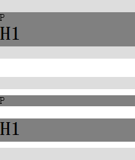
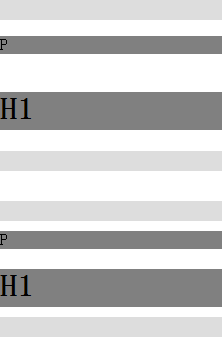

RM1009: IE6 IE7 IE8(Q) 中一些块级元素的默认上下外边距会在其浮动或触碰到 hasLayout 的容器后消失
标准参考
'margin' 特性指定了一个框的外边距区域的宽度，它指定了可以作为简写同时指定上下左右四个方向的外边距距离，也可以使用 'margin-top'、'margin-bottom'、'margin-left' 和 'margin-right' 分别指定各自的宽度。
这些特性可以应用在所有元素上，但垂直方向的 margin 不会影响行内非替换元素。
关于 'margin' 特性的更详细信息，请参考 CSS 2.1：8.3 Margin properties: 'margin-top', 'margin-right', 'margin-bottom', 'margin-left', and 'margin'。
问题描述
IE6 IE7 IE8(Q) 中一些拥有默认上下外边距的块级元素（浏览器设置的）在浮动，或触碰到触发了 hasLayout 特性的容器后，上下外边距会消失。
造成的影响
此问题导致的外边距消失可能影响到页面的布局，如段落过于紧凑，甚至是文字重叠。
受影响的浏览器
| IE6 IE7 IE8 (Q) |
|---|
问题分析
在各浏览器中，P、H1、H2、H3、H4、H5、H6、PRE、UL、OL、DL等块级元素都拥有默认的 'margin-top' 与 'margin- bottom'。
1. IE6 IE7 IE8 (Q) 中有默认上下外边距的块级元素浮动后外边距消失
在 IE6 IE7 IE8(Q) 中，拥有默认 'margin-top'、'margin-bottom' 的块级元素在浮动后，其原有默认的上下外边距丢失。
分析以下代码：
<div style="float:left; width:100%; height:20px; background:#DDD;"></div> <p style="float:left; width:100%; background:gray;">P</p> <h1 style="float:left; width:100%; background:gray;">H1</h1> <div style="float:left; width:100%; height:20px; background:#DDD;"></div> <div style="float:left; width:100%; height:20px; background:#DDD; margin-top:30px;"></div> <p style="float:left; width:100%; background:gray; margin:10px 0;">P</p> <h1 style="float:left; width:100%; background:gray; margin:10px 0;">H1</h1> <div style="float:left; width:100%; height:20px; background:#DDD;"></div>
测试代码中所有元素均为浮动且宽度均为100%，两个 DIV 元素之间有 P 元素和 H1 元素，前面一组没有为 P、H1 元素设置 'margin-top' 与 'margin-bottom'，使用浏览器默认样式。后面一组为它们设置了 'margin:10px 0'。在各浏览器中效果如下：
| IE6 IE7 IE8(Q) | IE8(S) Firefox Chrome Safari Opera |
|---|---|
|  |  |
- 在 IE6 IE7 IE8(Q) 中，拥有默认 'margin-top'、'margin-bottom' 的块级元素在浮动后，其原有默认的上下外边距丢失，而由用户设置的则不会丢失；
- 在 IE8(S) Firefox Chrome Safari Opera 中，浮动并没有对拥有默认 'margin-top' 和 'margin-bottom' 的块级元素造成任何影响。
2. IE6 IE7 IE8(Q) 中有默认上下外边距的块级元素触碰到 hasLayout 容器后外边距可能会消失
在 IE6 IE7 IE8(Q) 下，若一个 P 元素是其触发了 hasLayout 特性的容器的第一个元素，则这个 P 元素的默认上外边距会消失，若为容器的最后一个元素，则默认下外边距会消失；对于其他拥有默认上下外边距的块级元素，若是触发了 hasLayout 特性的容器的第一个元素，则这个元素的默认上外边距会消失。
分析以下代码：
<div>P元素，默认样式，容器触发hasLayout：</div>
<div style="border:5px solid black; zoom:1;">
<p style="background:gray;">P</p>
<p style="background:gray;">P</p>
</div>
<br />
<div>H3 元素，默认样式，容器触发hasLayout：</div>
<div style="border:5px solid black; zoom:1;">
<h3 style="background:gray;">H3</h3>
<h3 style="background:gray;">H3</h3>
</div>
<br />
<div>P元素，用户样式，容器触发hasLayout：</div>
<div style="border:5px solid black; zoom:1;">
<p style="background:gray; margin:10px;">P</p>
<p style="background:gray; margin:10px;">P</p>
</div>
<br />
<div>H3元素，用户样式，容器触发hasLayout：</div>
<div style="border:5px solid black; zoom:1;">
<h3 style="background:gray; margin:10px;">H3</h3>
<h3 style="background:gray; margin:10px;">H3</h3>
</div>
测试代码分为4组，第一组测试了默认样式下的 P 元素，第二组为默认样式下的 H3 元素，第三组和第四组则测试了用户设置 'margin' 特性后 P 和 H3 元素。在各浏览器中效果如下：
| IE6 IE7 IE8(Q) | IE8(S) Firefox Chrome Safari Opera |
|---|---|
 |
 |
可见，在 IE6 IE7 IE8(Q) 中，在使用浏览器默认样式时，如果 P 元素是触发了 hasLayout 的容器内的第一个元素，则这个 P 元素的默认上外边距会消失，而容器内的最后一个元素如果是 P 元素，这个 P 元素的默认下外边距会消失。对于 H3 元素，则仅当容器内第一个元素是 H3 元素的时候，其默认的上外边距消失。此外 H1、H2、H4、H5、H6、PRE、UL、OL、DL 等拥有默认上下外边距的元素的情况与 H3 类似。
与上一节相同，当为这些元素设置 'margin' 代替浏览器默认的外边距样式后，此现象消失。
若容器没有触发 hasLayout 特性，则不会出现此现象。
解决方案
用自定义的 'margin' 取代浏览器的默认外边距样式。
参见
知识库
相关问题
测试环境
| 操作系统版本: | Windows 7 Ultimate build 7600 |
|---|---|
| 浏览器版本: |
IE6 IE7 IE8 Firefox 3.6 Chrome 4.0.302.3 dev Safari 4.0.4 Opera 10.51 |
| 测试页面: | ie_float_and_hasloyout_maring_hidden.html |
| 本文更新时间: | 2010-07-09 |
关键字
float margin 浮动 hasLayout 外边距 容器